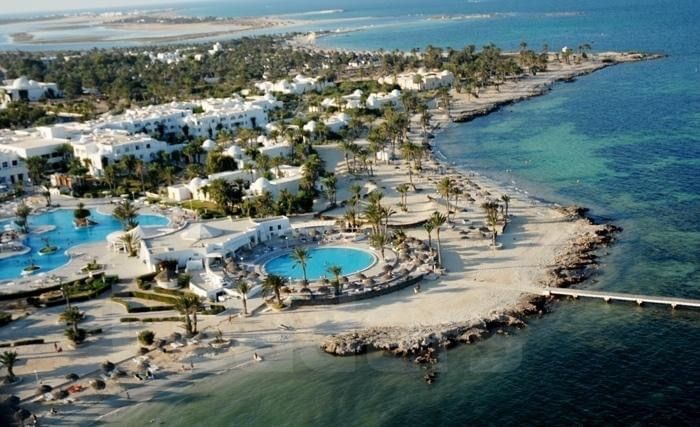
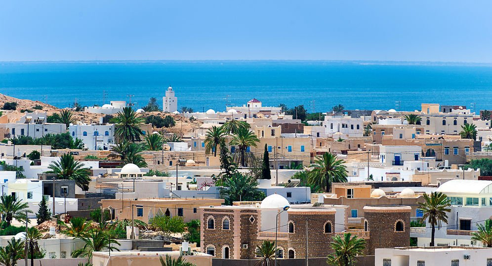

Une île du sud-est tunisien.
Située dans le gouvernorat de Médenine, en Tunisie, l'île de Djerba constitue un territoire insulaire dont l'organisation est étroitement liée à son environnement naturel et à sa situation géographique.

Un environnement méditerranéen.
Djerba se caractérise par un environnement semi-aride marqué par la rareté des ressources en eau. Ces conditions naturelles ont influencé les modes de vie des habitants ainsi que l'organisation traditionnelle du territoire.

Un territoire entre terre et mer.
À partir du IXe siècle, l'île a développé un mode d'occupation caractérisé par des quartiers appelés « houma », regroupant des propriétés familiales nommées « menzel ». Ces espaces, relativement autonomes, étaient reliés entre eux ainsi qu'aux lieux de culte et de commerce par un réseau de routes.